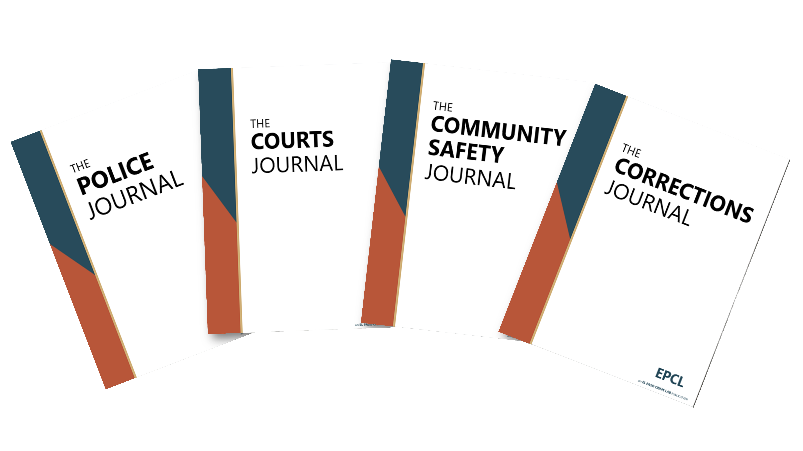

EPCL Publications
Research. Practice. Public Safety.
EPCL Publications
Open Access Journals in Justice and Public Safety
The El Paso Crime Lab publishes four journals featuring research briefs, professional perspectives, and lessons from practice across policing, corrections, courts, and community safety.

Publications and Resources
Explore published contributions, learn about submitting your work, and discover the editorial standards guiding EPCL Publications.
Explore the complete archive of published contributions across EPCL’s journals.
Search by article title or author name, or filter by journal or contribution category.
The El Paso Crime Lab publishes research, professional knowledge, and accessible educational resources that advance the science of public safety in the Borderland. Each journal serves a distinct audience and area of the criminal justice system.
The Community Safety Journal
The Community Safety Journal makes research and public safety knowledge accessible to community members, local organizations, policymakers, and other interested readers.
Contributions may examine local public safety concerns, community experiences, criminal justice policy, prevention initiatives, and research findings with practical implications for the Borderland. The journal prioritizes accessible writing and clear explanations that help readers understand complex issues.
The Police Journal
The Police Journal advances research-informed policing by connecting criminological research, professional experience, and practical knowledge.
Contributions may address police organizations, patrol operations, problem-oriented policing, crime analysis, officer development, organizational leadership, program evaluation, and emerging issues in law enforcement. The journal welcomes research briefs, educational explainers, professional perspectives, and evaluations of policing strategies.
The Corrections Journal
The Corrections Journal examines the institutions, practices, and policies that shape correctional systems.
Contributions may address jails, prisons, community corrections, institutional safety, rehabilitation, reentry, correctional personnel, and organizational management. The journal emphasizes evidence-informed approaches to improving correctional practice and outcomes.
The Courts Journal
The Courts Journal explores the administration, operation, and impact of courts and related justice institutions.
Contributions may address court administration, case processing, pretrial practices, sentencing, access to justice, judicial policy, and the experiences of individuals navigating the court system. The journal encourages research and practical perspectives that support effective, fair, and informed justice processes.
Have knowledge or experience to share? We welcome contributions from researchers, public safety professionals, students, and community members.
Three types of contributions
Research & Education
Explain research, share findings, or teach readers about a topic.
Perspectives & Debate
Share an informed opinion or offer a different way to think about an issue.
Practice & Experience
Share practical advice, professional experiences, or lessons learned.
How to get published
- Submit a short proposal describing your idea.
- Two editors independently review your proposal without knowing your identity.
- If approved, write and submit your article.
- Two editors independently review your blinded article and may request changes.
- If accepted, your article is prepared for publication.
All proposals and articles undergo blinded editorial review to promote fairness and reduce bias.
You do not need a finished article to submit a proposal.
Become an editor
Help make practical public safety knowledge easier to find and use. If you have experience in policing, corrections, courts, or community safety through your work or research, we’d like to hear from you.
To express interest, [send a message](www.epcrimelab.org/contact.html. Tell him which journal interests you and share a few sentences about your background.
How a review works
Editors review short proposals and full articles. Each assignment arrives by email and has its own review link.
- Open the emailYou’ll get a link to your assignment.
- Read the submissionReview the work and answer a few questions.
- Submit your decisionSend your decision and any feedback in the same form.
Editorial policies
Editorial Independence
Publication decisions are based on the relevance, quality, and suitability of contributions. Authors’ professional affiliations and institutional positions do not guarantee acceptance.
Editorial Review
Two editors independently review each proposal and each article. Reviews are blinded to help editors focus on the work. EPCL resolves split decisions.
Publication Ethics
Authors are responsible for the accuracy and integrity of their submissions, appropriate acknowledgment of sources, and disclosure of relevant conflicts of interest.
Conflicts of Interest
Authors and editors should disclose relationships or interests that could reasonably be perceived as influencing the preparation, review, or publication of a contribution.
Corrections and Retractions
EPCL may issue corrections, expressions of concern, or retractions when necessary to maintain the accuracy and integrity of its publications.
Copyright and Permissions
Publication and reuse conditions will be communicated to contributors during the submission and acceptance process.
The Community Safety Journal
Current Editors
- Editor Name, Affiliation
Past Editors
- Editor Name, Affiliation
The Police Journal
Current Editors
- Editor Name, Affiliation
Past Editors
- Editor Name, Affiliation
The Corrections Journal
Current Editors
- Editor Name, Affiliation
Past Editors
- Editor Name, Affiliation
The Courts Journal
Current Editors
- Editor Name, Affiliation
Past Editors
- Editor Name, Affiliation
Themed collections bring together articles on a shared public safety topic.
Have an idea for a collection? Let us know.
Share your idea using our proposal form.
No themed collections are currently open for submissions.